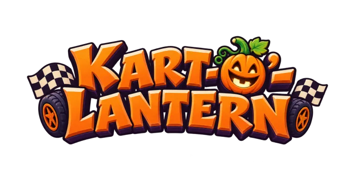

Your browser does not support the canvas tag.
Kart-o'-Lantern needs JavaScript.

Kart-o'-Lantern
Lighting the lanterns along the track…
The lanterns blew out: this browser stopped the game's graphics (its WebGL context was lost).
Light them again
Turn your phone sideways
Steer with your left thumb; drift and throw items with your right.